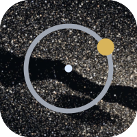
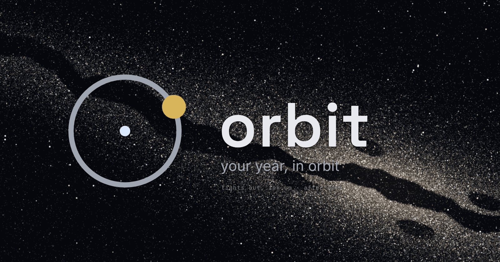

Orbit — README banner and logo, round 5 (#1177)
One option: K's composition, the sky rebuilt stars-first for contrast and structure at README size. As the README would show it, on a white page and a dark page: header logo at 132px, the banner PNG, footer logo at 52px.
Stars first
K's composition exactly; the sky rebuilt out of stars sized to read at README width, a crisp dark rift, a thin core glow, high contrast (sky.py).



Orbit
your year, in orbit
Features · Quick start · Documentation · Licence

What it is
Orbit keeps a household's recurring obligations — the boiler service, the MOT, the insurance renewal — on one calm chart of the year, and tells you what needs you next.
your year, in orbit
Orbit
your year, in orbit
Features · Quick start · Documentation · Licence
What it is
Orbit keeps a household's recurring obligations — the boiler service, the MOT, the insurance renewal — on one calm chart of the year, and tells you what needs you next.
your year, in orbit